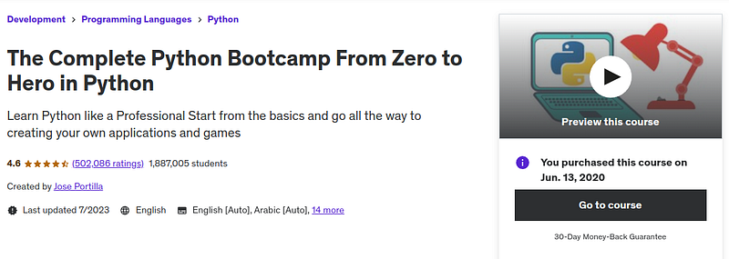
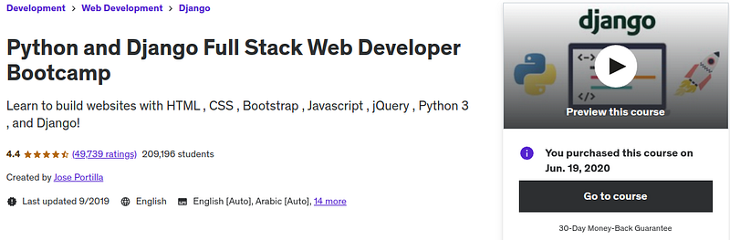
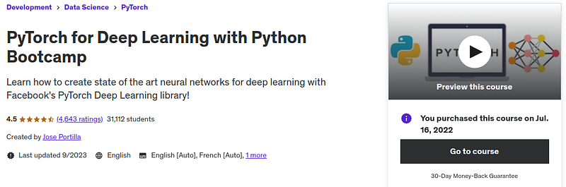
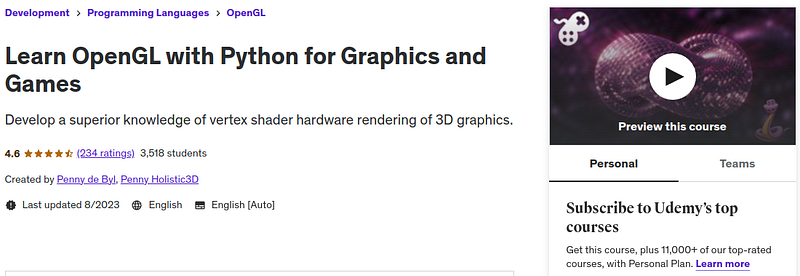

I will show you how I would learn Python looking back. I will speak with insight on what works and what doesn't work.
I have directed a good number of university students on how to learn Python with great results as well.
I believe I will show you a great path in learning Python.
Through hard and extensive trial and error I will show you the best resources I encountered on my journey. Instead of stopping and starting right where you are in my guide, I recommend reading the article in its entirety and bookmarking each video or guide.
You can use this guide as a reference to look back to and direct you in learning Python.
Start with fundamentals
For every how to learn X language tutorial I will always recommend starting with this video:
Introduction to Programming and Computer Science - Full Course
Your goal is to extract as much information as you can from this video. If you are a beginner this will make your journey in programming remarkably better.
Watch that FreeCodeCamp video in its entirety, take notes on things you feel you will forget in the future. If you are learning from the video correctly it should take you 2-4 days of watching slowly, looking up concepts in an LLM and taking notes.
The fundamentals are the most important start of beginning with programming. You must understand why certain principles of programming exist.
Fundamentals are the most transferable skills in programming. Not only will you be a more techy person for that tutorial but you will learn programming much faster.
Trust me trust me trust me, as a beginner you need to learn the fundamentals and that is the best tutorial I could find, even from Udemy. And it is free.
Learn the language
When it comes to video series vs books, video series almost always seems to win for me. That is why I so dearly love Udemy.
Those $15 you spend on a course are worth more than the time you spend making $15. Tutorials on YouTube cannot compare to the quality of the best Udemy courses.
These teachers on Udemy put their lively hood on the line to make learning a language as digestible as possible, giving you skill progression you can gain nowhere else.
So let us limit our self to Udemy. What is the best Udemy course I have seen? Well it is more about the instructor.
More often it is the instructor that makes the video series good, not the course itself. This is why I have seen instructors make 10 different courses and guess what? They were 10 awesome courses.
The instructor is the most important thing to look for in a Udemy course. And, who is the best instructor I could find for Python? My personal opinion is Jose Portilla.
All of his Python courses are fantastic which is why I recommend taking multiple of his courses, starting with his Zero to Hero series on learning Python.
In the Zero to Hero course, all the videos are important. You should not skip any parts. At the same time you can start some simple Python projects.
Perhaps the best projects are GUI projects due to how Python heavy they are: 7 Awesome GUI Projects To Build Your Skills and 20 More
Take notes always
As you go through the course, you should take notes. The intent of the notes should be to teach your future self things you know you will forget or that are hard to understand.
This makes the notes a reference manual you can refer to when reviewing concepts and libraries.
Read about how to take notes.
Proudly learn with LLMs and Youtube
One of the primary uses of the Udemy course is to follow the learning path given by the instructor. He organizes your Python learning by increasing complexity, in the best order he could think of.
If there is anything hard to understand during a Udemy course, make it clear by looking up other videos on YouTube and asking an LLM. Your goal is to make everything as clear as possible.
This combination of following the structure of a Udemy course, clearing things up with YouTube and an LLM is a fantastic way to speed up your learning most efficiently.
Start on LeetCode
Once you have gotten past the first Udemy course, LeetCode can teach you how to program for performance and efficiency. A great way to learn with this is to do 1 problem a day and learn your niche below at the same time.
Why would I even recommend doing this?
You need to grow a biological adaption to running code logic in your head and solving algorithms.
The entire purpose of LeetCode is to biologically adapt yourself to solving algorithms within a time and memory capacity.
I know that sounds like some woowoo but I have experienced it. I did 150 LeetCode problems in Python and holy crap.
It was like Karate Kid. I became able to imagine code logic in all languages with significant improvement and was able to predict runtime and memory as though it were second nature.
As a beginner I would start with 40-50 easy problems. Then do 100 or so Mediums. It is a lot tougher than you think, but once your mind adapts to LeetCode, you become able to solve these problems in a quarter of the time than before.
And it leaks out to other languages and all your problem solving abilities.
Here is a guide and exercise plan on how to learn from LeetCode.
After completing those 150 LeetCode problems, restart from the beginning and do all the problems again. You will find you have become so good at it you can complete them all in half the time.
Choose your path
After learning the language you can start on a topic of learning while you are doing LeetCode. There are four I recommend going from easiest to hardest...
- Web development
- Game development
- Machine learning
- Graphics programming
The easiest being web development and the hardest being graphics programming, these topics work extremely well in Python.
Web development
You only need one course to get you up and running in web development. It is Python and Django Full Stack Web Developer Bootcamp by Jose Portilla.
It teaches you everything you need to know to get started with amazingly digestible lessons. Even the course being from 2019 is still completely relevant today.
Once you get to the end, I recommend choosing between Flask (Easy) and Django (Complex).
There are plenty of projects you can create, like a Portfolio, API for data. Tools for video games and many other projects in Python web development.
Game development
This is all about making games with PyGame. The goal would be to create games programmatically. And, no matter what you do in game development you should learn to create your own art.
This means you should learn sprite or 3d modeling. Artists are very hard to keep and find. If you want to make progress in Indie development, you will need to make your own art.
No one will be as reliable as you are in making art. And if you want to learn Python through game development, you have to stick to doing it through coding and avoiding game engines.
Many indie game influences praise this style of game development as the best thing they could have done for their programming skills.
I recommend searching Udemy courses, try them out and return them if they teach poorly. Then try again.
Also search "pixel art" or "blender" depending on if you want 2D or 3D.
The process, buy it, test it, if its good keep it, otherwise return it within 30 days.
Machine learning
Likewise with the two above, you can use machine learning as motivation to learn Python.
My only hesitancy behind this, it is hard enough to learn machine learning on its own.
To add learning Python to mix is quite tough.
I would recommend a learning intermediary step such as GUI programming with TKinter or game development temporarily. You do want to be a little advanced in Python for this.
When it comes to machine learning itself I would start by learning all the popular algorithms, NumPy, Pandas and tensors. That would setup a foundation.
Guess who made a course about all that?
Jose Portilla coming in ready for new machine learners.
You can find datasets on HuggingFace and use them with algorithms in the course.
As your own side project web scrapping your own dataset is viable too.
After that course you can choose between classification, vision and language processing. Whichever interests you and continue learning as you go.
But that PyTorch course will help you get started.
Graphics programming
Thankfully there are a lot of resources for graphics programming in Python. Particularly for PyGame + PyOpenGL.
Given how quick Python is to master, OpenGL sounds like a lot of fun. You can create all kinds of applications after some time using these two.
Something like this one is a good way to go...
Because of the technical nature of graphics programming, there is no option but to read technical manuals and textbooks.
Perhaps the best being, Real-Time Rendering (affiliate link, no cost to you!).
Then the OpenGL specification and the Shader specification.
Lastly, like game development, its best to make all your own art. Blender or pixel art are the ways to go in creating graphics applications.
Mastering Python
There is only one thing missing. You need to use Python a lot and for different purposes. It is impossible for me to completely guide you on mastery.
I can comprehensively start you on a direction, but the increasingly complex progression of your projects must be taken long-term, self-directed with projects you never imagined you would take.
Anywho, I hope you learned something...
CTA: Check out my book on learning code
Happy coding!
Resources
The two things you need as a programmer: Two Vital Skills to Learn Code Faster: Debugging and the Dry Run